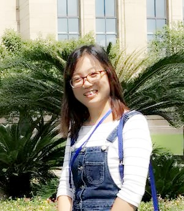

周丽峰
个人简历
周丽峰，女，理学硕士，河南大学生命科学学院。
联系方式
E-mail: lzhou2016@163.com
电话：17839239239
研究方向
昆虫-植物-根际微生物的互作关系
教育背景
2008 – 2011 硕士 河北师范大学 生命科学学院
工作经历
2016 – 至今 河南大学生命科学学院 科研助理
2012 – 2015 中国科学院生态环境研究中心 科研助理
2011 – 2012 河北师范大学 辅导员 团总支书记
周丽峰，女，理学硕士，河南大学生命科学学院。
E-mail: lzhou2016@163.com
电话：17839239239
昆虫-植物-根际微生物的互作关系
2008 – 2011 硕士 河北师范大学 生命科学学院
2016 – 至今 河南大学生命科学学院 科研助理
2012 – 2015 中国科学院生态环境研究中心 科研助理
2011 – 2012 河北师范大学 辅导员 团总支书记